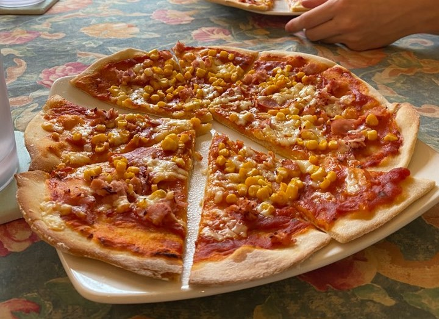
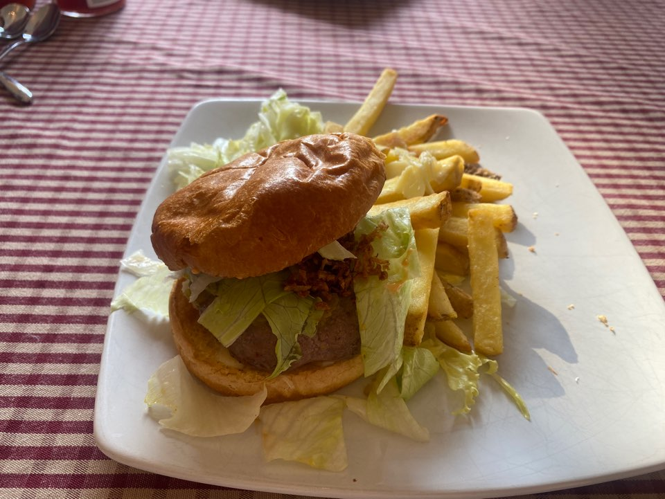

The Best ice creams in the world. These stores don't exist in Korea so I was really happy for it! they have various flavors - yes i felt like i was in heaven! But the store is a little bit small sadly... But It's just a LEGEND. I'm not the person who enjoys eating sweets like chocolates or candies but I really loved chocolate flavor! Why don't you try to eat this tasty of heaven?
Biang Biang noodle is a hot noodle dish from Shaxi province, sometimes known as Xian noodles. It is made with wide, thick, belt noodles with a hot sauce with chili pepper, chopped scallion, chopped garlic, light soy sauce, and black vinegar.
When i missed some spicy foods but wanted to eat chinese food, i used to eat this one. It looks so spicy but it is not (at least to me tbh) Personally, I prefer thick noodles so for it was best! And also you can choose tofu instead of beef or pork. If i visit this restaurant again, i would eat biangbiang noodles with tofu.
Eddy ramsay - he is the best chef in the world...
???


This chef is a LEGEND. He is just 18 years old but he can cook and make food art. But he is also smart, handsome, cute, lovely, addorable, kind, nice, sexy and so on... it's possible that he is not Human being... Ah and he can bake also - he made some cute cupcakes with peanut butter and it was great! I don't know what foods he can make more but I think he can make a lot more - so where should you guys go to meet this chef? It's secret because he cooks only for me (maybe) Well... if you guys really really want to eat his food, i will ask him...